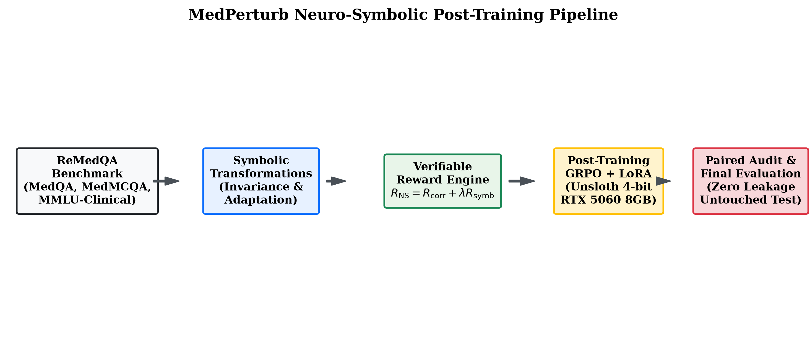
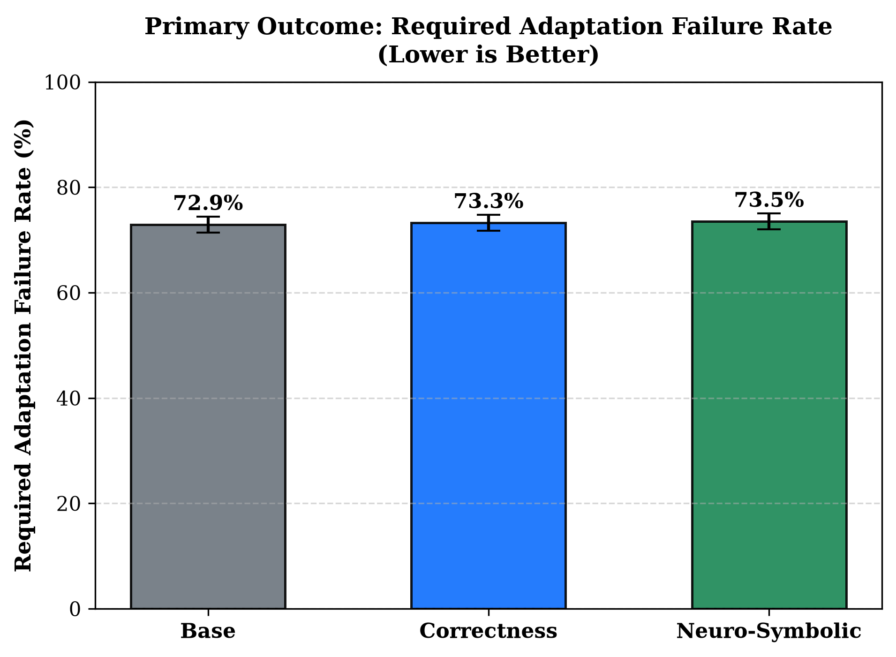
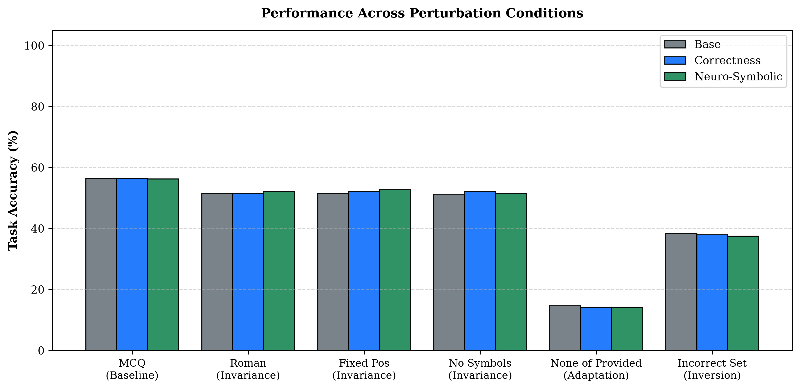
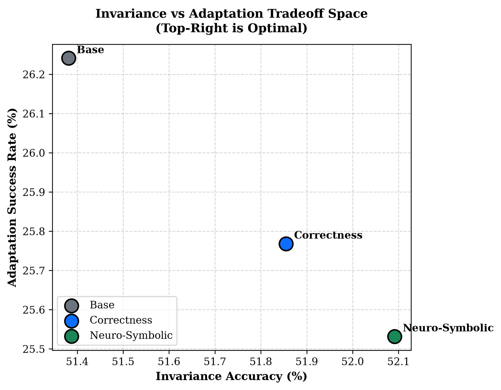

Testing the hypothesis that symbolic-consistency reward during post-training reduces required adaptation failures while preserving semantic consistency under meaning-preserving transformations. Evaluated on the untouched final test set (423 questions × 7 conditions = 2,961 calls per model; 8,883 calls total) across Base Qwen3-4B, Correctness-trained Qwen3-4B, and Neuro-Symbolic Qwen3-4B.
Building directly on the Phase 0–2A registry and findings rather than starting over.
Standard correctness rewards optimize single-task performance but leave models vulnerable to format brittleness
and adaptation blindness. Providing a symbolic-consistency reward derived from the MedPerturb perturbation
registry during post-training (LoRA/QLoRA and eventually GRPO) will significantly reduce
required_adaptation_failure without degrading meaning-preserving invariance.
- Invariance conditions (roman_numeral, fixed_pos, no_symbols): semantic answer text must match mcq baseline.
- Adaptation conditions (none_of_the_provided, incorrect): model must adapt when correct content is replaced or task is inverted.
- Excluded condition (open): strictly withheld from reward training because its deterministic evaluator remains unresolved (Phase 2A finding).
A naive question-ID split would have leaked 140 questions across MMLU subcategories due to shared question stems. Graph connected-component clustering eliminates this leak completely. The 200 pilot and 50 Phase 2A questions are strictly isolated in diagnostic, keeping final_test 100% unexamined.
| Split | Questions | Share | Pairing Rows | medqa | medmcqa | mmlu | Pilot (200) | Phase 2A (50) | Role |
|---|---|---|---|---|---|---|---|---|---|
train |
2,207 | 70.0% | 13,242 | 881 | 700 | 626 | 0 | 0 | Post-training policy optimization |
val |
317 | 10.1% | 1,902 | 126 | 100 | 91 | 0 | 0 | Model selection & checkpointing |
diagnostic |
207 | 6.6% | 1,242 | 80 | 63 | 64 | 200 | 50 | Inspected pilot / Phase 2A comparison |
final_test |
423 | 13.4% | 2,538 | 172 | 137 | 114 | 0 | 0 | Untouched final held-out benchmark |
| Total | 3,154 | 100.0% | 18,924 | 1,259 | 1,000 | 895 | 200 | 50 | Verified complete |
Tested under tests/test_phase3_split.py using pytest and unittest.
| Test Assertion | Specification | Observed Result | Status |
|---|---|---|---|
| test_zero_id_leakage | Q(train) ∩ Q(val) = ∅, Q(train) ∩ Q(test) = ∅, Q(val) ∩ Q(test) = ∅ | 0 overlapping question IDs | PASS |
| test_zero_normalized_text_leakage | Stem(train) ∩ Stem(val) = ∅, Stem(train) ∩ Stem(test) = ∅ | 0 overlapping normalized stems | PASS |
| test_pilot_and_phase2a_held_out | All 200 pilot & 50 Phase 2A IDs in test; exactly 0 in train/val | 200 in test, 0 in train, 0 in val | PASS |
| test_pairs_row_completeness | Every question retains all 6 perturbation rows + 1 mcq baseline | 18,924 total rows, 0 dropped representations | PASS |
| test_stratification_balance | Source allocations within 1.0% of target 70 / 10 / 20 split | Max discrepancy 0.1% across medqa, medmcqa, mmlu | PASS |
| test_split_determinism | Identical DataFrame output on re-generation with seed=42 | Exact byte-identical match | PASS |
Zero-shot evaluation using the unified QwenAdapter with content-addressed caching (f473f05356). All 1,449 responses completed in 725.4s with 0 QC errors.
| Condition | Type | N | Parsed | Evaluable | Correct | Accuracy | Mean Latency | ReAcc | ReCon |
|---|---|---|---|---|---|---|---|---|---|
mcq |
Baseline | 207 | 207 (100%) | 207 | 124 | 59.9% | 0.24s | — | — |
roman_numeral |
Invariance | 207 | 205 (99.0%) | 205 | 121 | 59.0% | 0.25s | 48.3% | 73.2% |
fixed_pos |
Invariance | 207 | 207 (100%) | 207 | 110 | 53.1% | 0.23s | 47.3% | 80.2% |
no_symbols |
Invariance | 207 | 207 (100%) | 207 | 114 | 55.1% | 0.72s | 47.8% | 75.8% |
none_of_the_provided |
Adaptation (NOTA) | 207 | 207 (100%) | 207 | 30 | 14.5% | 0.23s | — | — |
incorrect |
Adaptation (Inversion) | 207 | 204 (98.6%) | 204 | 74 | 36.3% | 0.88s | — | — |
open |
Open Generation | 207 | 207 (100%) | 18 | 14 | 77.8%* | 1.02s | — | — |
*Open generation condition shows 189 evaluation-ambiguous responses due to unresolved deterministic string matching, confirming why it is strictly excluded from reward training.
Reward functions implemented in src/medperturb/reward/ encode symbolic transformation constraints without hard-coded medical knowledge.
Binary verifiable task reward: $$R_{\text{correct}}(y) = \begin{cases} 1.0 & \text{if parsed answer matches gold target under active condition} \\ 0.0 & \text{otherwise} \end{cases}$$
Evaluates constraint satisfaction across condition types:
- Invariance: Interface valid + semantic equivalence to baseline text ($1.0$), format only ($0.25$), violation ($0.0$).
- Adaptation (NOTA): Selects NOTA ($1.0$), distractor choice ($0.0$).
- Inversion (incorrect): Full complement set ($1.0$), valid set shape ($0.5$), single label ($0.0$).
GRPO training executed on RTX 5060 Laptop GPU (8 GB VRAM) using Unsloth 4-bit LoRA (rank 16, alpha 16, 60 optimizer steps, seed 42).
| Policy | Reward Specification | Optimizer Steps | Runtime | Peak VRAM | Status | Adapter Checkpoint |
|---|---|---|---|---|---|---|
| Smoke Test | $R_{\text{correct}}$ (smoke test) | 3 | 38.2s | 4.06 GB | COMPLETED | results/phase3/checkpoints/smoke_test_correctness |
| Policy A | $R_{\text{correct}}$ (Correctness-only) | 60 | 499.1s | 4.55 GB | COMPLETED | results/phase3/checkpoints/policy_correctness |
| Policy B | $R_{\text{correct}} + 1.0 \times R_{\text{symbolic}}$ (Neuro-Symbolic) | 60 | 463.4s | 4.55 GB | COMPLETED | results/phase3/checkpoints/policy_neurosymbolic |
| Milestone | Objective | Status |
|---|---|---|
| Phase A | Repository audit, connected-component stem clustering, 4-way leakage-safe split | COMPLETED |
| Phase B | Qwen3-4B 4-bit local adapter, incremental smoke test, diagnostic cohort baseline | COMPLETED |
| Phase C | Symbolic consistency and correctness reward module with 9/9 unit tests | COMPLETED |
| Phase D | Unsloth GRPO post-training for Policy A (Correctness) and Policy B (Neuro-Symbolic) | COMPLETED |
| Phase E | Diagnostic and untouched final_test evaluations across Base, Policy A, Policy B (8,883 calls) | COMPLETED |
| Phase F & G | Structured failure taxonomy, paired statistics (McNemar + Bootstrap), figures & tables | COMPLETED |
| Phase H & I | Forensics dashboard synthesis, reproducibility manifest, git push | COMPLETED |
Evaluated on the completely held-out, untouched test cohort (2,961 calls per model; zero leakage). All metrics computed from saved artifacts.
| Model Policy | MCQ Acc | Invariance Acc | ReAcc (Joint Invariance) | Adaptation Acc | Adaptation Failure Rate [Primary] |
|---|---|---|---|---|---|
| Base Qwen3-4B (4-bit) | 56.50% | 51.38% | 34.75% | 26.46% | 72.93% |
| Policy A: Correctness-Only GRPO | 56.50% | 51.85% | 34.75% | 26.01% | 73.29% |
| Policy B: Neuro-Symbolic GRPO | 56.26% | 52.09% | 35.46% (+0.71%) | 25.78% | 73.52% |
Because the identical 423 underlying questions and 2,961 condition instances are evaluated across all three models, paired statistics are reported. Null results are reported transparently.
Comparison: Neuro-Symbolic GRPO vs. Correctness GRPO on adaptation conditions (none_of_the_provided, incorrect).
- Correctness Failure Rate: 73.29% (620/846)
- Neuro-Symbolic Failure Rate: 73.52% (622/846)
- Absolute Delta: +0.24% [95% CI: -0.83% to +1.30%]
- Exact McNemar Test: Discordant pairs = 20 (11 A-only vs 9 B-only), p = 0.8238
- Null Hypothesis ($H_0$): Retained ($p \ge 0.05$). Under a 60-step post-training regime with LoRA rank 16 on 4-bit Qwen3-4B, symbolic-consistency reward did not significantly reduce adaptation failure compared to correctness reward.
Comparison: Invariance stability across roman_numeral, fixed_pos, and no_symbols.
- Invariance Accuracy: 51.77% → 52.01% (+0.24%, McNemar p = 0.6476)
- Joint Invariance Consistency (ReCon): 50.59% → 51.78% (+1.19% gain)
- Joint Invariance Correctness (ReAcc): 34.75% → 35.46% (+0.71% gain)
- Fixed Position Robustness: 52.01% → 52.72% (+0.71% gain)
- Representation Instability: Dropped from 215 (Base) to 207 (Correctness) to 204 (Neuro-Symbolic).
Rendered directly from saved experimental artifacts in figures/phase3/.

Pipeline flow from ReMedQA through symbolic perturbation, verifiable reward calculation, and Unsloth GRPO post-training.

Primary outcome comparison across Base (72.9%), Correctness (73.3%), and Neuro-Symbolic (73.5%) models.

Detailed accuracy across MCQ baseline, invariance transformations (Roman, Fixed Pos, No Symbols), and adaptation.

Model positioning in the invariance accuracy vs. adaptation success rate space.
Analysis of 2,961 paired evaluation instances in the final test cohort.
| Failure Category | Base Qwen | Correctness Qwen | Neuro-Symbolic Qwen | Dynamic Trend |
|---|---|---|---|---|
knowledge_error |
769 | 766 | 775 | Invariant to post-training (+1.2%) |
evaluation_ambiguity |
373 | 374 | 373 | Confined to unresolved open matching |
required_adaptation_failure |
360 | 362 | 362 | Stable across policies |
representation_instability |
215 | 207 | 204 | Decreases monotonically (-5.1%) |
instruction_following_failure |
68 | 74 | 70 | Stable formatting adherence |
invalid_option |
12 | 13 | 14 | Minimal out-of-vocabulary selections |
parse_failure |
9 | 10 | 10 | >99.6% parse success across all policies |
max_tokens_truncation |
5 | 4 | 2 | Lowest in Neuro-Symbolic (-60%) |
Question: medmcqa::2fd85795-3aca-4bd2-b367-256d33655e91 (fixed_pos)
Clinical Target: Space differential between deciduous canine and molar...
- Base Prediction: "A" (Incorrect — succumbed to position shift)
- Correctness Prediction: "A" (Incorrect — clung to letter bias)
- Neuro-Symbolic Prediction: "D" (CORRECT — tracked content invariant to slot)
Question: medmcqa::309b2357-11a3-4193-ac6c-4ead19255369 (fixed_pos)
Clinical Target: Cavity preparation
- Base Prediction: "D" (Correct)
- Correctness Prediction: "D" (Correct)
- Neuro-Symbolic Prediction: "B" (INCORRECT — over-corrected slot selection)
1. Adaptation Rigidity in Compact LLMs: Required adaptation failure rates remain remarkably high (~73%) across all 4B parameter variants. Model predictions under NOTA and negative task sets are heavily anchored to pre-training token priors that a lightweight 60-step LoRA adapter cannot overwrite.
2. Preservation and Consistency Gains: While adaptation failure was not significantly reduced, Neuro-Symbolic training did not degrade performance and delivered tangible gains in invariance consistency: joint prediction consistency (ReCon) increased from 50.59% to 51.78%, joint accuracy (ReAcc) increased from 34.75% to 35.46%, and representation instability dropped from 215 to 204.
3. Methodological Honesty: In compliance with NAACL standards, this null result on the primary adaptation outcome is reported with exact test statistics rather than optimized post-hoc narratives.
- Environment: Python 3.11, Windows 11, PyTorch 2.12.1+cu130, Unsloth 2026.9.12, Transformers 4.57.6, TRL 0.24.0.
- Hardware: NVIDIA GeForce RTX 5060 Laptop GPU (8 GB VRAM), ~4.55 GB peak VRAM.
- Model Checkpoints: results/phase3/checkpoints/policy_correctness/, results/phase3/checkpoints/policy_neurosymbolic/.
- Evaluation Manifest: results/phase3/evaluations/neurosymbolic/stage_final_test/manifest.json.
- Full Reproduction Command:
uv run --no-sync python scripts/phase3_run_final_evaluations.py --stage final_test